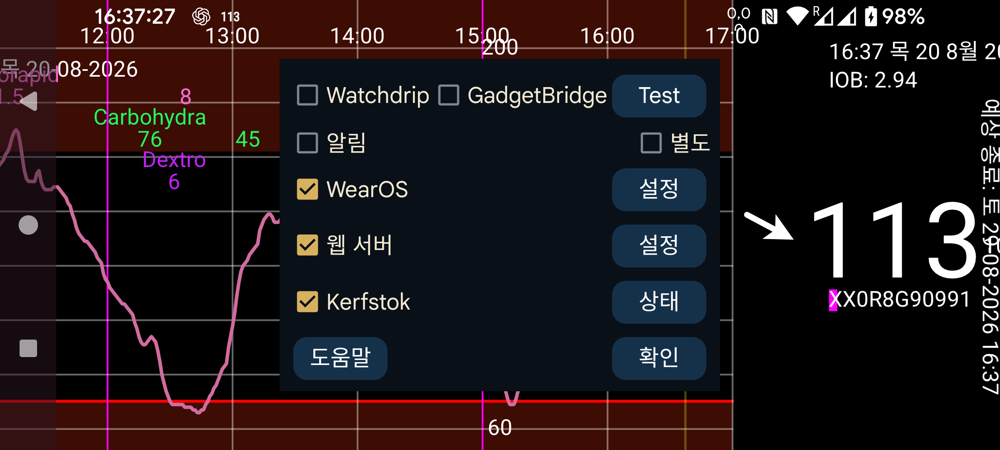

현재 Juggluco에는 워치에서 혈당 값을 확인하는 일곱 가지 방법이 있습니다.
다음이 알림 으로 켜져 있으면 새 혈당 값이 도착할 때마다 Android 알림이 생성됩니다. 일부 워치는 새 알림이 생성될 때만 알림을 워치로 보내므로 이런 워치에서는 별도을 켜야 합니다. 이런 워치에서 알람 알림도 받으려면 별도 을 켜야 합니다.
이 기능을 켜면 Juggluco가 혈당 값을 Watchdrip+로 보냅니다. Watchdrip+는 혈당 값을 표시하는 워치 페이스를 MiBand/Amazfit 워치로 보냅니다.
GadgetBridge 를 사용하면 MiBand/Amazfit 워치에 날씨 정보를 표시할 수 있습니다. GadgetBridge 옵션을 켜면 Juggluco가 혈당 값을 날씨 정보인 것처럼 GadgetBridge로 보냅니다. Watchdrip보다 훨씬 빠르다는 장점이 있지만 표시되는 정보가 적다는 단점이 있습니다. Juggluco는 혈당 값과 방향 화살표를 날씨 위치에 넣습니다. 이 위치는 워치의 Weather 아래에 표시됩니다. 이 위치를 표시하는 워치 페이스는 찾지 못했습니다. 다음은 mmol/L에만 해당합니다. 소수점 앞의 값은 최고 기온에, 소수점 뒤의 값은 최저 기온에 넣습니다. mg/dL 값은 기온으로 쓰기에는 너무 크므로 마지막 숫자를 최저 기온에, 그 앞의 숫자를 최고 기온에 넣습니다. 따라서 106 mg/dL은 최고 기온 10, 최저 기온 6이 됩니다.
변화 방향에 따라 날씨 아이콘도 정해집니다. 눈은 혈당 하락, 비는 혈당 상승을 의미합니다. 변화율은 현재 기온에도 넣습니다. 0보다 크면 상승, 0보다 작으면 하락입니다.
Kerfstok은 숫자를 입력할 수 있는 워치 앱 이며 인슐린 투여량 같은 숫자를 입력할 수 있고, 현재 혈당 값도 표시합니다. 새 혈당 값이 도착하면 Juggluco가 즉시 Kerfstok으로 보내므로 Kerfstok에는 항상 가장 최근 혈당 값이 표시됩니다. Kerfstok은 Garmin에서 지원하는 모든 활동을 기록할 수 있으며 속도와 거리도 표시할 수 있습니다. 워치→Kerfstok 상태→도움말 및 다음을 참조하십시오: https://www.juggluco.nl/Kerfstok
앱은 Juggluco가 보내는 혈당 브로드캐스트 중 하나에서 혈당 값을 받아 워치로 보낼 수 있습니다. 예를 들어 G-Watch(TizenOS 또는 WearOS)는 Glucodata 브로드캐스트에서 혈당 값을 받을 수 있습니다(왼쪽 메뉴→설정→데이터 교환).
Juggluco에는 xDrip/Nightscout 웹 서버가 내장되어 있어 xDrip 워치 앱을 Juggluco와 직접 사용할 수 있습니다. xDrip은 5분마다 새 혈당 값을 표시하지만 Juggluco는 매분 새 값을 표시합니다. Juggluco는 xDrip 워치 앱에도 가장 최근 혈당 값을 보냅니다. 혈당 값은 워치 앱이 요청할 때만 보내므로 표시되는 값의 오래된 정도는 워치 앱이 언제 요청하는지에 따라 달라집니다. 예를 들어 Garmin 워치의 워치 페이스와 데이터 필드는 5분마다 한 번만 혈당 값을 요청합니다. xDrip을 통하면 혈당 값이 10분이나 오래된 경우가 많았습니다. Juggluco에 직접 연결하면 이런 워치 페이스에는 최대 약 6분 지난 값이 표시됩니다. Garmin에서 Kerfstok을 사용할 수 없다면 최근 혈당 값을 정기적으로 받는 방법은 다음과 같습니다. xDrip 위젯(https://apps.garmin.com/en-US/apps/73115e04-dc9f-4765-ad88-e7ae283ce995)은 활동 기록 중에도 사용할 수 있습니다. 따라서 손이 자유롭다면 표준 Garmin 스포츠 앱으로 활동을 기록하면서 이 xDrip 위젯으로 전환할 수 있습니다. 혈당 값을 정기적으로 갱신하는 xDrip 스포츠 앱도 있습니다: https://apps.garmin.com/en-US/apps/aaf6533b-bca1-4365-9131-9f882f6f148c. 혈당 값을 사용할 수 있게 된 직후 요청하도록 시작 시점을 맞춰 볼 수 있습니다. 데이터 필드와 워치 페이스가 이상적인 해결책이겠지만 Garmin의 제한 때문에 유용성이 낮습니다.
예전에는 Juggluco의 웹 서버를 다음 워치 페이스와 함께 사용할 수 있었습니다: Fitbit 용: https://glancewatchface.com . 2024년 중반부터 Fitbit 워치에서는 타사 앱을 더 이상 허용하지 않습니다: https://www.techradar.com/health-fitness/fitbit-watches-in-the-eu-will-lose-third-party-apps-and-watch-faces-heres-why . EU 규제가 이 결정의 계기가 되었을 수 있습니다. Wear OS에서 대체 앱 스토어를 허용해야 할 가능성 때문일 수도 있습니다. 타사 앱이 없는 단순 피트니스 트래커도 허용되니 그런 제품으로 바뀔 수 있습니다. 위치를 미국으로 바꾸고 VPN을 사용하면 다시 타사 앱을 설치할 수 있다고 말하는 사람도 있습니다.
웹 서버 인터페이스에 대한 자세한 내용은 다음을 참조하십시오: https://www.juggluco.nl/Juggluco/webserver.html
Wear OS로 포팅된 Juggluco 버전이 있습니다. 작은 화면에 맞게 표시가 조정되었고 워치 페이스도 추가되었습니다. 이 워치 페이스는 일반 Wear OS 워치 페이스처럼 설치할 수 있으며 시간과 함께 Bluetooth로 받은 현재 혈당 값도 표시합니다.